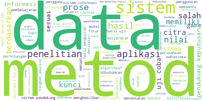

Topik Modelling LDA#
Read File#
import pandas as pd
url = "/content/drive/MyDrive/web mining/HasilPreposPTA.xlsx"
dt = pd.read_excel(url)
dt['cleaning']
---------------------------------------------------------------------------
FileNotFoundError Traceback (most recent call last)
<ipython-input-1-8aff218d122f> in <cell line: 4>()
2
3 url = "/content/drive/MyDrive/web mining/HasilPreposPTA.xlsx"
----> 4 dt = pd.read_excel(url)
5 dt['cleaning']
/usr/local/lib/python3.10/dist-packages/pandas/util/_decorators.py in wrapper(*args, **kwargs)
209 else:
210 kwargs[new_arg_name] = new_arg_value
--> 211 return func(*args, **kwargs)
212
213 return cast(F, wrapper)
/usr/local/lib/python3.10/dist-packages/pandas/util/_decorators.py in wrapper(*args, **kwargs)
329 stacklevel=find_stack_level(),
330 )
--> 331 return func(*args, **kwargs)
332
333 # error: "Callable[[VarArg(Any), KwArg(Any)], Any]" has no
/usr/local/lib/python3.10/dist-packages/pandas/io/excel/_base.py in read_excel(io, sheet_name, header, names, index_col, usecols, squeeze, dtype, engine, converters, true_values, false_values, skiprows, nrows, na_values, keep_default_na, na_filter, verbose, parse_dates, date_parser, thousands, decimal, comment, skipfooter, convert_float, mangle_dupe_cols, storage_options)
480 if not isinstance(io, ExcelFile):
481 should_close = True
--> 482 io = ExcelFile(io, storage_options=storage_options, engine=engine)
483 elif engine and engine != io.engine:
484 raise ValueError(
/usr/local/lib/python3.10/dist-packages/pandas/io/excel/_base.py in __init__(self, path_or_buffer, engine, storage_options)
1650 ext = "xls"
1651 else:
-> 1652 ext = inspect_excel_format(
1653 content_or_path=path_or_buffer, storage_options=storage_options
1654 )
/usr/local/lib/python3.10/dist-packages/pandas/io/excel/_base.py in inspect_excel_format(content_or_path, storage_options)
1523 content_or_path = BytesIO(content_or_path)
1524
-> 1525 with get_handle(
1526 content_or_path, "rb", storage_options=storage_options, is_text=False
1527 ) as handle:
/usr/local/lib/python3.10/dist-packages/pandas/io/common.py in get_handle(path_or_buf, mode, encoding, compression, memory_map, is_text, errors, storage_options)
863 else:
864 # Binary mode
--> 865 handle = open(handle, ioargs.mode)
866 handles.append(handle)
867
FileNotFoundError: [Errno 2] No such file or directory: '/content/drive/MyDrive/web mining/HasilPreposPTA.xlsx'
Eksplorasi analisis (Word Cloud)#
from wordcloud import WordCloud
long_string = ','.join(list(dt['cleaning'].astype(str).values))
wordcloud = WordCloud(background_color="white", max_words=5000, contour_width=3, contour_color='steelblue')
wordcloud.generate(long_string)
# Visualisasi WordCloud
wordcloud.to_image()

Proporsi Topik Dalam Dokumen#
import numpy as np
import pandas as pd
from sklearn.feature_extraction.text import CountVectorizer
from sklearn.decomposition import LatentDirichletAllocation
data = dt['cleaning']
# Membuat DataFrame dari data teks
dt_lda = pd.DataFrame(data)
dt_lda['cleaning'] = dt_lda['cleaning'].fillna('')
# mengonversi teks menjadi matriks hitungan
vectorizer = CountVectorizer()
count_matrix = vectorizer.fit_transform(dt_lda['cleaning'])
# model LDA
k = 3
alpha = 0.1
beta = 0.2
lda = LatentDirichletAllocation(n_components=k, doc_topic_prior=alpha, topic_word_prior=beta, random_state=42)
lda.fit(count_matrix)
# distribusi topik pada setiap dokumen
doc_topic_distribution = lda.transform(count_matrix)
topic_names = [f"Topik {i+1}" for i in range(k)]
df = pd.DataFrame(columns=['Abstrak'] + topic_names)
for i, topic_name in enumerate(topic_names):
df[topic_name] = doc_topic_distribution[:, i]
# Menampilkan DataFrame
df['Abstrak'] = dt_lda['cleaning'].values
# Menambahkan kolom berisikan jumlah total proporsi semua topik
df['Total Proporsi Topik'] = df[topic_names].sum(axis=1)
# Menyimpan DataFrame sebagai file CSV
output_csv_file = "topik_in_document.csv"
df.to_csv(output_csv_file, index=False)
df
| Abstrak | Topik 1 | Topik 2 | Topik 3 | Total Proporsi Topik | |
|---|---|---|---|---|---|
| 0 | sistem informasi akademik siakad sistem inform... | 0.001215 | 0.001215 | 0.997569 | 1.0 |
| 1 | berjalannya koneksi jaringan komput lancar gan... | 0.000950 | 0.000950 | 0.998100 | 1.0 |
| 2 | web server perangkat lunak server berfungsi me... | 0.320577 | 0.056240 | 0.623182 | 1.0 |
| 3 | penjadwalan kuliah perguruan komplek permasala... | 0.997027 | 0.001486 | 0.001486 | 1.0 |
| 4 | seir perkembangan teknolog didunia muncul tekn... | 0.597672 | 0.001201 | 0.401127 | 1.0 |
| ... | ... | ... | ... | ... | ... |
| 853 | investasi saham memiliki resiko kerugian perge... | 0.511188 | 0.219065 | 0.269747 | 1.0 |
| 854 | inform retriev ir pengambilan informasi tersim... | 0.275245 | 0.723524 | 0.001230 | 1.0 |
| 855 | klasifikasi citra prose pengelompokan piksel c... | 0.000636 | 0.998728 | 0.000636 | 1.0 |
| 856 | identifikasi atribut pejalan kaki salah peneli... | 0.000773 | 0.998453 | 0.000774 | 1.0 |
| 857 | topik deteksi objek menarik perhatian perkemba... | 0.001108 | 0.997785 | 0.001108 | 1.0 |
858 rows × 5 columns
Proporsi Kata Dalam Topik#
# Menampilkan distribusi kata pada setiap topik
topic_word_distribution = lda.components_ / lda.components_.sum(axis=1)[:, np.newaxis]
# Membuat DataFrame untuk distribusi kata pada setiap topik
word_topic_df = pd.DataFrame(topic_word_distribution.T, columns=[f"Topik {i+1}" for i in range(k)],
index=vectorizer.get_feature_names_out())
# Normalisasi distribusi kata pada setiap topik agar totalnya 1.0
word_topic_df = word_topic_df.div(word_topic_df.sum(axis=1), axis=0)
# Menambahkan kolom berisikan jumlah total proporsi semua kata pada topik
word_topic_df['Total Proporsi Kata'] = word_topic_df.sum(axis=1)
# Menyimpan DataFrame yang telah diperbarui sebagai file CSV
output_csv_file = "kata_in_topik.csv"
word_topic_df.to_csv(output_csv_file)
# Menampilkan DataFrame sebagai tabel
print("\nProporsi Kata pada Setiap Topik:")
word_topic_df
Proporsi Kata pada Setiap Topik:
| Topik 1 | Topik 2 | Topik 3 | Total Proporsi Kata | |
|---|---|---|---|---|
| aalysi | 0.122721 | 0.134022 | 0.743257 | 1.0 |
| aam | 0.077695 | 0.848917 | 0.073388 | 1.0 |
| ab | 0.742164 | 0.132583 | 0.125253 | 1.0 |
| abad | 0.456362 | 0.081526 | 0.462112 | 1.0 |
| abadi | 0.075698 | 0.081137 | 0.843165 | 1.0 |
| ... | ... | ... | ... | ... |
| zucara | 0.740580 | 0.132580 | 0.126839 | 1.0 |
| zungu | 0.740580 | 0.132580 | 0.126839 | 1.0 |
| zâ | 0.131580 | 0.846214 | 0.022206 | 1.0 |
| âµ | 0.055303 | 0.891842 | 0.052855 | 1.0 |
| â¼ | 0.122738 | 0.131558 | 0.745705 | 1.0 |
8492 rows × 4 columns